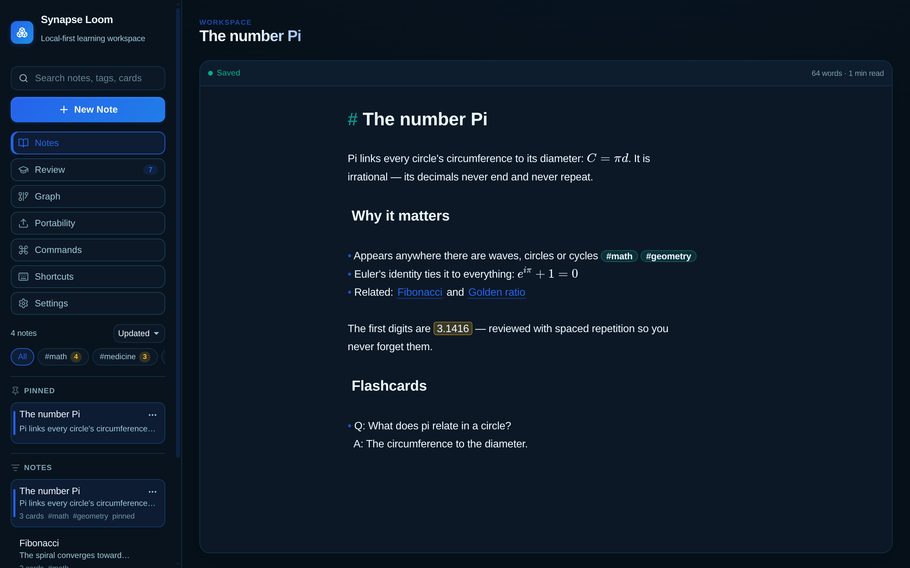

Coming from Anki?
Import your .apkg decks — cards keep their ease, interval and due date, images included. No starting over.
Public beta
A local-first desktop app for note-taking and spaced repetition. Weave your notes into a knowledge graph — and let it teach you back.

Import your .apkg decks — cards keep their ease, interval and due date, images included. No starting over.
Cloze deletions and Q/A become flashcards on save. The queue puts what you're about to forget first, failed cards return in-session, and you can type answers for real recall.
Cover parts of a diagram, map or anatomy figure — every box becomes a card that hides exactly that region.
Wikilinks and backlinks connect ideas into a graph. Daily notes, math (KaTeX), and live Markdown preview come built in.
Day streak, daily goal, activity heatmap and a weekly summary of what you consolidated — plus leech management for the cards that fight back.
Your notes live in a SQLite database on your machine. No account, no cloud, no lock-in — export to plain Markdown anytime. Six themes, keyboard-first.